Sensors
Smart Civil Structures: L03
Table of Contents
- Accelerometers
- Piezoelectric (IEPE)
- Servo
- Capacitive MEMS (Micro-Electro Mechanical System)
- Strain Sensors
- Temperature Sensor
- Wind Sensors
Accelerometers
Accelerometer: Basic Principle 1
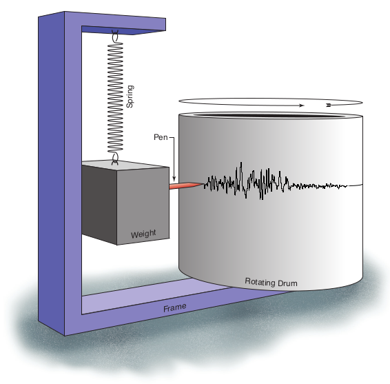
- As the frame is moved up with acceleration, the weight wants to keep its position
- As the drum moves with the frame, the pen attached to the weight will draw a downward curve
- As the frame is moved down with acceleration, the weight keeps it position, the drum moves down with the frame, drawing an upward curve
- The inertia force \(m \ddot{y}\) balances with the spring force \(k x\), i.e., \(\ddot{y}= \frac{k}{m} x\) where \(x\) is read from the drum.
- Basically this system cosisting of a frame, a weight and rotating drum, is difficult to be small. We have alternative approaches.
- However, we need to understand a principle before we proceed, Piezoelectricity.
Piezoelectric Effect 2
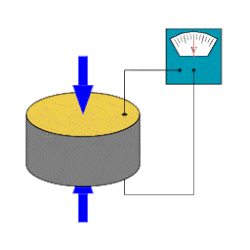
- Mechanical pressure induces a voltage difference
- Measuring a voltage can measure the pressure (hence force)
- Reversible prcess, applying a voltage inducing a strain
- This is a reversible prcess, i.e., applying a voltage difference induces mechanical strain. This can be used for precise control of machine.
Piezoelectric Effect
Why applying a mechanical stress creates a voltage difference?
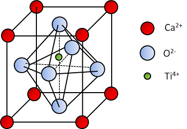
- Crystal Structure and Built-in Dipoles
In many piezoelectric materials (e.g., lead titanate, barium titanate, PZT), the crystal has a perovskite structure. In this unit cell, the titanium ion (Ti⁴⁺) sits slightly off-center relative to the surrounding oxygen and other ions. This off-center position creates a dipole moment (tiny separation of positive and negative charge) in each cell — i.e., the cell has an internal polarization even without external forces.
- Mechanical Stress Changes the Lattice
When you apply mechanical stress (compress, stretch, bend), the entire lattice deforms. At the atomic level, distances between atoms change. Because the Ti⁴⁺ ion is already off-centre, the stress further displaces it relative to the negative oxygen ions in the unit cell. This displacement changes the dipole moment of the cell — increasing or decreasing the net electric polarization. Since the total electric polarization comes from the sum of all tiny dipoles, changing how far the Ti ion shifts changes the electric charge imbalance across the crystal.
- Why Does the Ion Move?
Mechanically stressing the lattice alters the potential energy landscape of the atoms. Each atom sits in an energy “well” determined by surrounding atoms’ electric and repulsive forces. Deforming the lattice changes these forces. The Ti ion finds a new equilibrium position under the stress because the force balance has changed. This new position is still off-center, but in a different place than before stress, which alters the dipole strength.
In simple terms, Stress physically squeezes or stretches the crystal lattice, which shifts the internal balance of forces on atoms like titanium — so they move slightly to new positions, changing the dipole moment.
This is the fundamental atomic mechanism behind the direct piezoelectric effect: mechanical stress → atomic shifts → change in polarization → measurable voltage or surface charge.
IEPE3 Piezoelectric Accelerometer
It is a very common standard for accelerometers, microphones, and other piezoelectric sensors, in vibration, acoustics, etc.
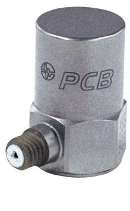
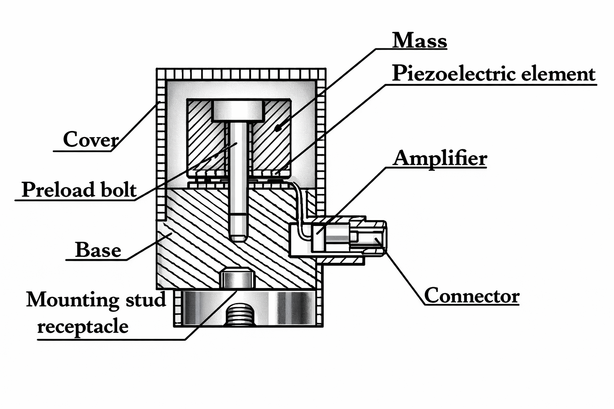
- Built-in electroics
- Powered by a constant current
- Coaxial cable is for power + signal
- Moderate cost & performance
- No DC measurement
Popular companies: PCB Electronics, Endevco
- The most common piezoelectric accelerometer type
- Sensor is powered with a constant-current supply over the same coax used for signal (typically 2–20 mA at ~18–30 V).
Inside an IEPE accelerometer, a seismic mass is clamped against a piezoelectric element by a preload bolt inside the metal housing; when the base moves, the mass creates a force on the crystal that generates charge (hence voltage). A miniature built-in amplifier (IEPE electronics) sits near the piezo stack to buffer and convert the high-impedance charge into a low-impedance voltage, which exits through the coaxial connector. The cover and base provide a stiff mechanical path, while the mounting stud fixes the sensor to the structure and completes the force path through the piezo element.
IEPE Piezoelectric Accelerometer
The equivalent noise acceleration spectral density (in g/√Hz) is
\[ a_{nPE} = \sqrt{4 k_B T \left(\frac{0.01 \omega_0}{mQ} + \frac{\eta C_{PE}}{\omega Q_{PE}^2}\right)} \]
Here the first term is the mechanical-thermal noise; the second term is the electrical-thermal noise of the PE transducer.
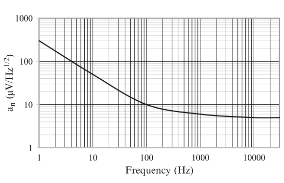
- Probably you don’t understand what this amplitude spectrum means. You can perceive it roughly as “frequency contents of a signal”. You will understand this more clearly after Signal Processing Lectures in the future.
- Please note that Freq is in log scale, as well as amplitude.
- The noise level is the most important important performance indicator of an accelerometer commonly represented in g/sq(Hz). Again, you will understand this more clearly after Signal Processing Lectures.
- This is because extremely small vibration peaks may be hidden by the noise floor
- Please note that the noise floor is a function of frequency.
- In lower frequency range close to DC (= 0Hz), the noise gets larger which resulting in an error when integrated twice to get a displacement.
- This low-frequency noise is universally existing on all types of accelerometers.
Servo Accelerometer
A feedback control system to keep a proof mass at a fixed (null) position. The force required is proportional to the applied acceleration1.
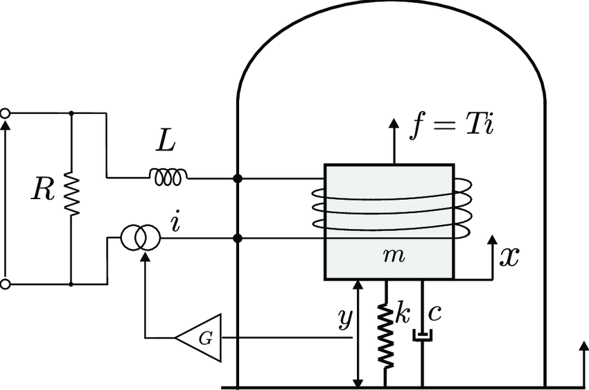
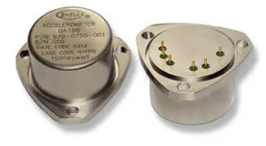
- Most expensive, top performance
- Aircraft/tactical for Inertial Navigation System
- DC sensor
A servo accelerometer uses a closed-loop force-balance: a proof mass is suspended by a spring/damper, its displacement is sensed, and a feedback amplifier drives a coil to apply a counterforce that keeps the mass at the null position. The required drive current (or force) is directly proportional to the applied acceleration, so the output is linear and DC-capable with excellent stability and low noise. This architecture delivers top performance for inertial navigation and aerospace applications, at the cost of higher complexity and price.
Servo Accelerometer: QA750
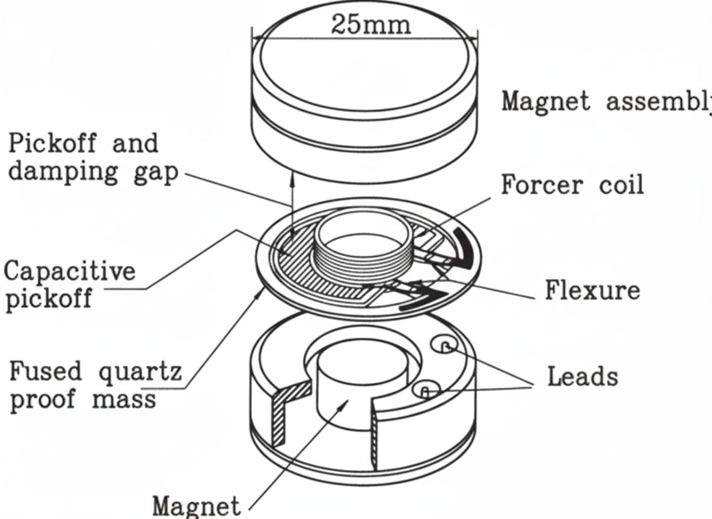
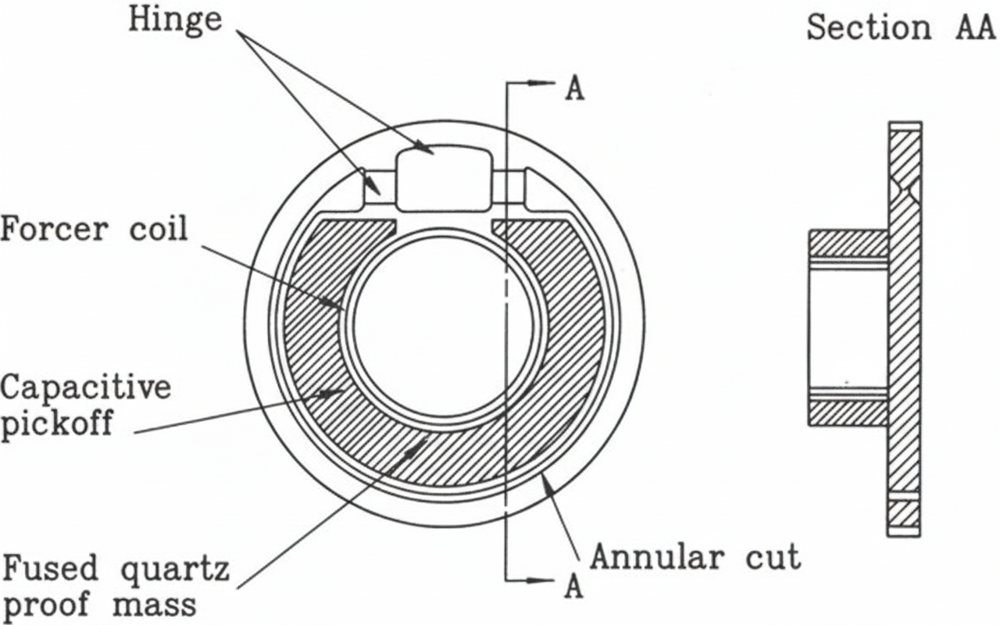
Servo Accelerometer: QA750
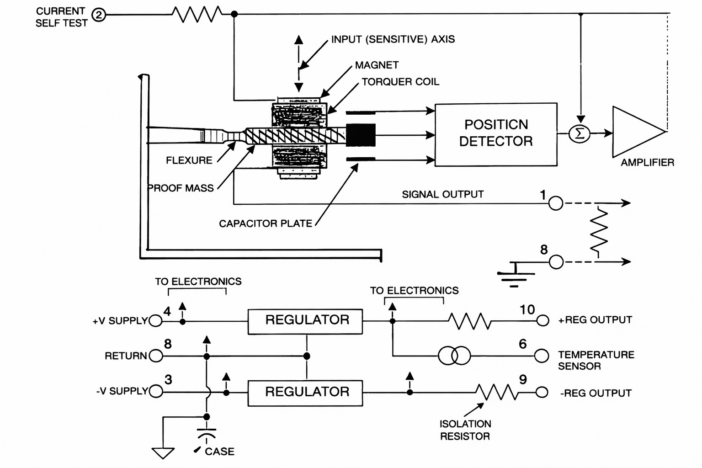
- Often called as Force-Balance Acc sensor.
The QA750 is a force‑balance (servo) accelerometer: a flexure‑supported proof mass sits between capacitor plates, and its tiny displacement is sensed by the position detector. A feedback amplifier drives the magnet/torquer coil to apply a counterforce that holds the mass at the null position, so the required coil current is proportional to input acceleration along the sensitive axis. The diagram also shows self‑test injection, on‑board regulation, and temperature sensing to stabilize the electronics and improve bias and scale‑factor performance.
Servo Accelerometer:
The famous one is single axis Honeywell QA-750.
| Property | Value |
|---|---|
| Input Range | ± 30g |
| noise level | 2.2 ug/sq(Hz) |
| cost | > £1k |
| resolution | < 1 ug |
| Output current | 1.3 mA/g |
- When you want to buy you need to sign on an agreement that you don’t use it for weapon or/and inertial navigational system.
Capacitance MEMS Accelerometers
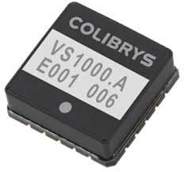
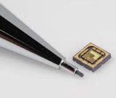
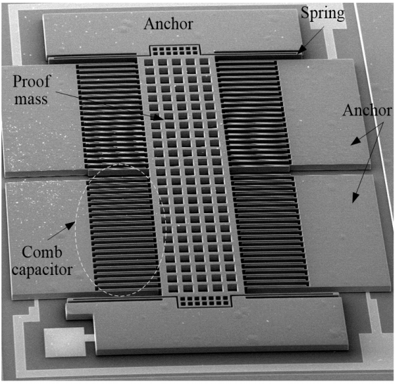
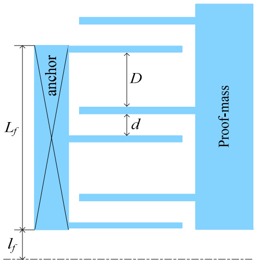
- As the proof-mass moves, D & d changes, leading to the change in the charges stored between plates
- The current between the two sets of capacitors is proportional to the acceleration
- Capacitance MEMS Accelerometers were poor performing up to 5-10 years ago, but now the technology has matured to catch up with the best noise performance of Servo Acceleromters.
MEMS Accelerometers in Market
Analogue Devices ADXL355/354 MEMS Sensor Chip
| ADXL355 | ADXL354 | |
|---|---|---|
| Output | Digital 20 bits ADC | Analogue Output |
| Noise floor | 25 ug/sq(Hz) | 20 ug/sq(Hz) |
| cost4 (GBP) | 63 | 54 |
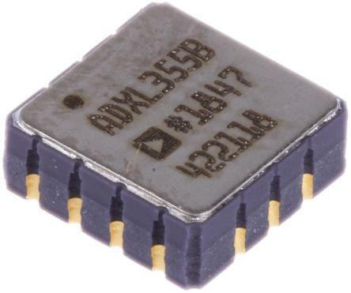
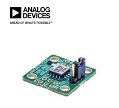
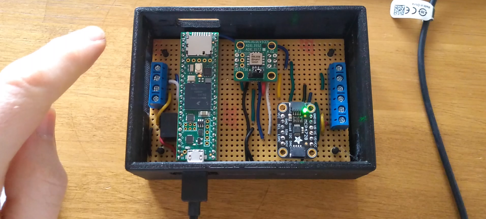
- Moderate cost/ Moderate performance, but good enough for many civil infrastructures; lively footbridge, or short-span bridges with traffic.
- Gamer changer at least MEMS Accelerometers.
MEMS Accelerometers in Market
GCDC X2-5: Simple-to-use Package with ADXL355
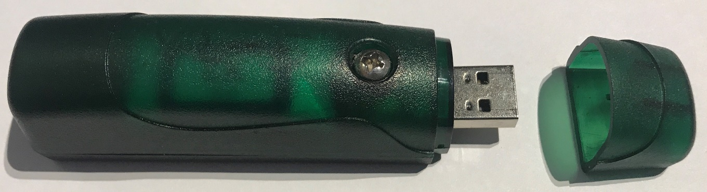
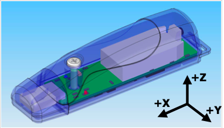
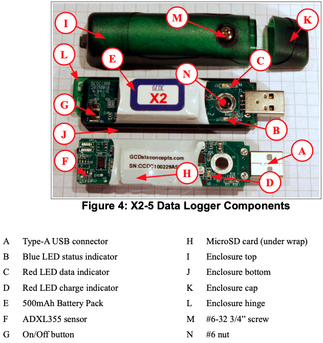
Noise Floor
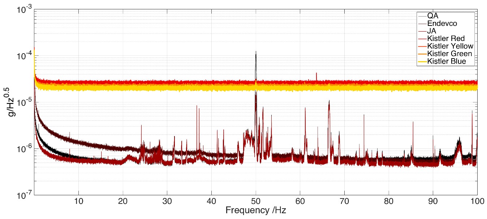
- QA is a servo type
- Endevco is IEPE type
- JA is capacitive MEMS type
- Kistler Acc’s are capacitive MEMS accelerometers. It has a similar performance with ADXL355.
- We can see the dramatic improvement of MEMS acc sensors better than the servo.
Summary on Accelerometers
| Type | IEPE | Servo | Capacitive MEMS |
|---|---|---|---|
| Noise | Moderate | Excellent | Moderate-Excellent |
| Cost | Moderate | Expensive | Expensive, but cheaper than Servo |
| DC-output | NO | Yes | Yes |
- DC output is useful for making sure that you are measuring the data rather than garbage.
- Also, it can be used for tilt estimation from accelerometer
Your choice of An Accelerometer
| Parameters | |
|---|---|
| frequency limit | up to 100 Hz or more? |
| acceleration range | ± 1g, ±2g or more |
| noise floor | g/sq(Hz) |
| Output | Analog/Digital? |
| sensitivity | V/g or mA/g |
| size/weight | is important? |
| no of axes | single or triaxial |
| cost | $k usually; get the best |
| lead time | can kill a project |
- Frequency limit is decided by your structure and your decision on what maximum frequency to use. Our civil structures are in lower frequency
- Acc range: depending on the actual range of acceleration of the structure. Usually our structures have a lower vibration amplitude.
- Cost: no smart signal processing recuses data from poor performance accelerometers.
Strain Sensors
Vibrating Wire Gauge
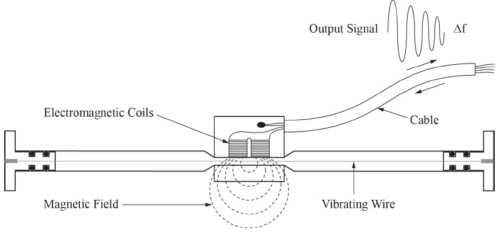
\[f = k \sqrt{\varepsilon} \quad k = \frac{L}{2}\sqrt{\frac{A E}{\rho}} \quad \Delta \varepsilon = k \left(f_{1}^{2} - f_{0}^{2}\right)\]
- Both ends are fixed to a structure, where we want to measure strain between the two fixed points
- Inside the gauage, there is a steel wire magnetized, with an initial tension. The mounting system has to have a way to control the tension.
- There are coils above the middle of the steel wire. Thermistor (a temperature sensor) is using 2 wires for temperature compensation. The other two wires are connected to the coils.
- Then a current pulse is applied to the coil wires, inducing a magnetic field, and then vibration on the steel wire.
- After that steel wire vibrates freely, as the vibrating wire induces electro-magnetic field, in turn, inducing a current on the coil wires.
- The current on the coil wire is measured to capture the frequency of vibration of the wire.
Vibrating Wire Gauge
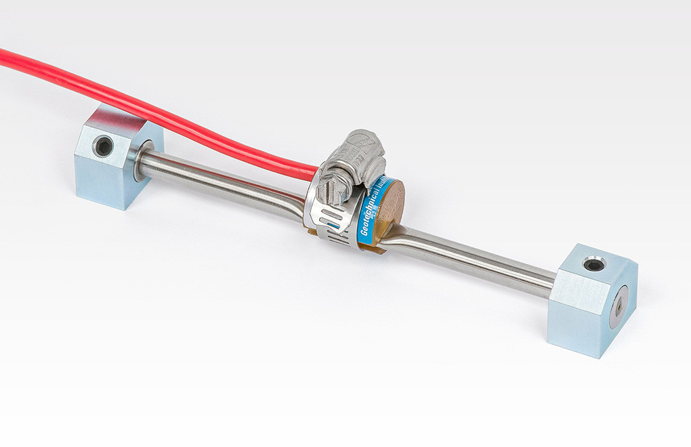
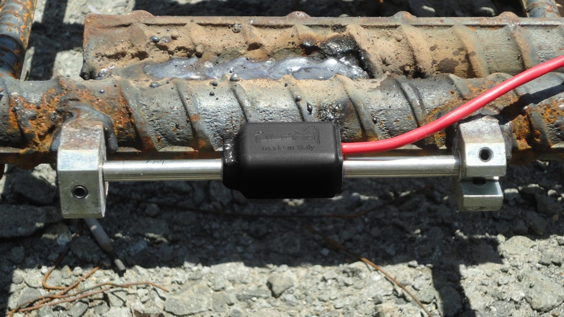
Electrical Resistance Strain Gauge
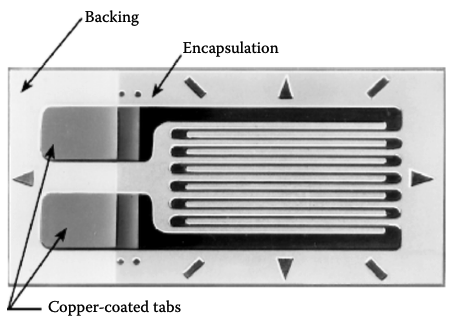
\[R = \dfrac{\rho L}{A}, \quad \frac{\Delta R}{R} = GF \cdot \varepsilon\]
- ρ (rho): the material’s electrical resistivity (Ω·m)
- L, A: Length and Area of the strain gauge
- R: nominal gauge resistance (e.g., 120 Ω, 350 Ω)
- ΔR: resistance change (very small)
- GF: gauge factor (typically ~2.0 for metal-foil gauges)
- ε: strain (dimensionless; 1000 µε = 0.001)
ERS: How to measure \(\Delta R\)
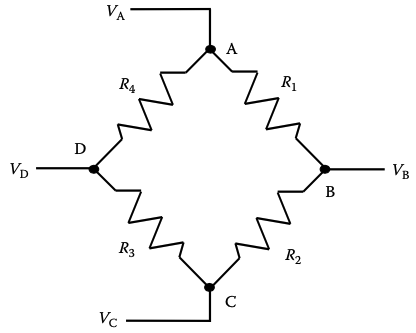
- Usually \(\Delta R\) is ~0.1% or less even at high strain = 1,000 \(\mu \varepsilon\)
- Measuring it with an ohmmeter is impractical
- Wheatstone Bridge is ideal because it converts resistance change into differential voltage accross D and B
- Depending on configuration, 1, 2, or 4 ERS are used.
\[\Delta V_{BD} = G (\Delta R_1 - \Delta R_2 + \Delta R_3 - \Delta R_4)\]
Fibre Bragg Grating Strain gauage
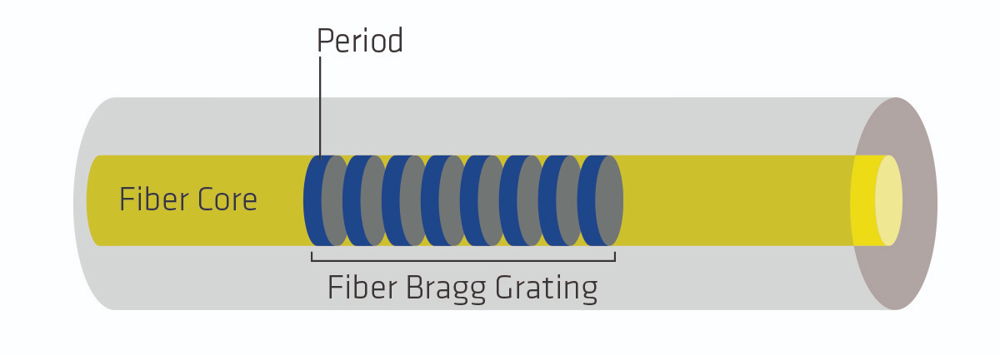
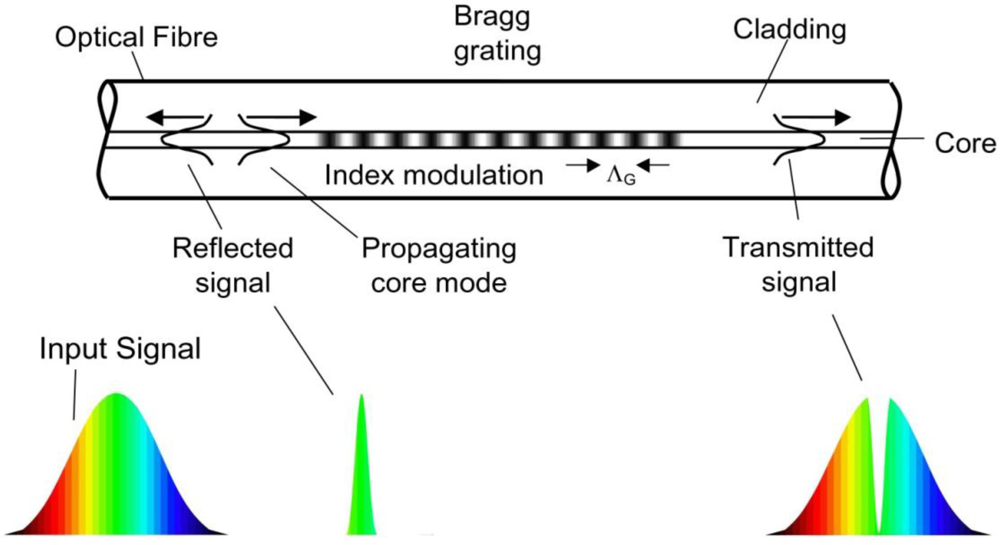
How to produce Fibre Bragg Grating:
A fiber Bragg grating is typically fabricated by exposing a photosensitive optical fiber (often germanium‑doped) to a spatially periodic UV interference pattern so the core’s refractive index is permanently modulated along a short length. The most common method uses a phase mask: a UV laser illuminates the mask, which creates an interference pattern that writes the grating into the fiber core beneath it. After exposure, the grating reflects a narrow band of wavelengths (the Bragg wavelength) determined by the grating period and effective index; the fiber may then be annealed or recoated to stabilize the inscription.
The wavelength of reflected light is depending on the bragg grating period, which is reveals the strain at the point
FBG Wavelength-Division Multiplexing
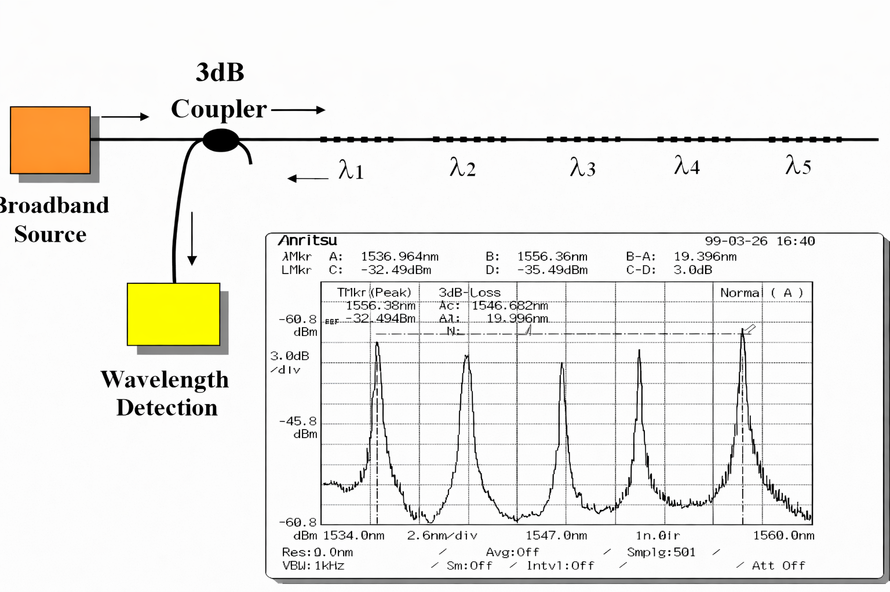
FBG wavelength‑division multiplexing sends broadband light through a coupler into a single fiber that contains multiple Bragg gratings, each tuned to a distinct wavelength (λ1, λ2, λ3, …). Every grating reflects only its own narrow band, so the returned spectrum shows separated peaks that correspond to each sensor along the fiber. A wavelength interrogator measures the peak shifts, converting them into strain or temperature at each grating location, allowing many sensing points on one fiber with minimal cabling.
Because of the WD-multiplexing, practical number of FBGs can be limited depending on expected range of strains: if two peaks are narrowly spaced, they may meet and make it difficult to distinguish which peak is from which sensor.
FBG Wavelength-Division Multiplexing
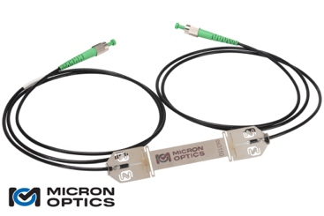
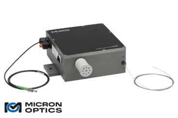
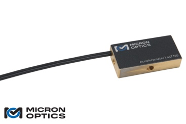
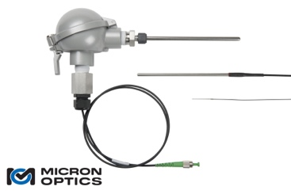
- Cambridge has been using fibre optics a lot.
FBG Interrogator
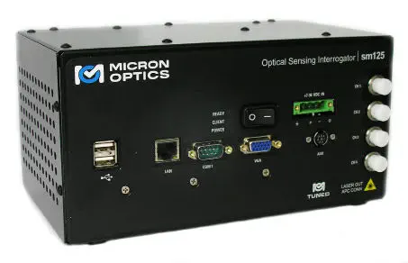
- This is an industrial PC with a monitor port (VGA), and USB ports for keyboard and mouse, and even with a LAN port.
- The size of Interrogator has been reduced a lot in the last two decades.
BOTDA: Principle
Brillouin Optical Time Domain Analysis
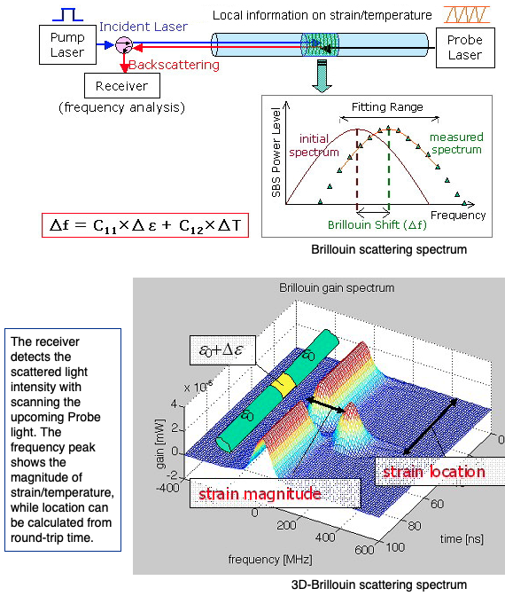
- Uses stimulated Brillouin scattering: a pump pulse and a counter-propagating probe interact in the fiber; Brillouin gain spectrum (BGS) shifts with strain/temperature.
- Brillouin frequency shift (BFS) is approximately linear with strain (≈ 0.05–0.06 MHz/με) and temperature (≈ 1 MHz/°C).
- Spatial resolution set by pump pulse width (e.g., 10 cm – 10 m typical); sensing range up to 10–50 km with repeaters/optimization.
- Measurement loop: launch pump pulse → sweep probe frequency → measure BGS → fit BFS → convert to strain/temperature (often temperature-compensated).
- Compared to BOTDR (Brillouin Optical Time‑Domain Reflectometry), BOTDA offers better SNR and resolution but requires access to both fiber ends.
BOTDA Product
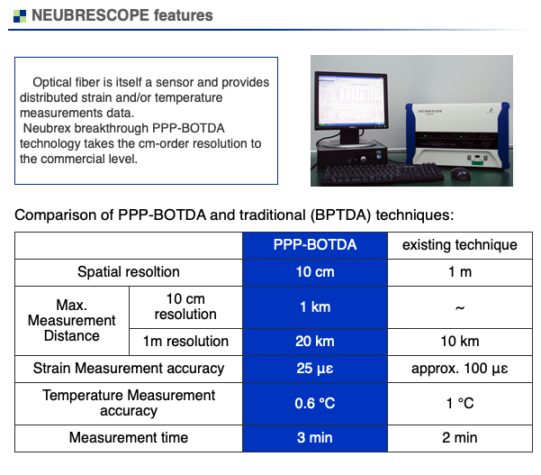
- They claim the technical advances in the spatial resolution, temperature resolution, and the maximum distance to measure (up to 20 km)
- Technology is advancing. 20 years ago, there was a BOTDR off-the-shelf system which I saw a demo run, but no BOTDA.
- Keep looking at the lastest techonology.
Summary on Strain Sensors
| Feature | VWG | ER | FBG | BOTDA |
|---|---|---|---|---|
| Measurement type | Point | Point | Point (multiplexed) | Distributed |
| Gauge length | Long (50–200 mm) | Short (5–10 mm) | Short–medium | Continuous (meters–km) |
| Spatial resolution | Point | Point | Point | 0.1–1 m |
| Sampling rate | Low | High | High | Very low |
| Dynamic strain | No | Yes | Yes | No |
| Cost | Lower | Lowest | High | Extremely High |
Temperature Sensors
- Thermistors
- Thermocouples
Thermistor: Principle
= Temperature-dependent Resistor
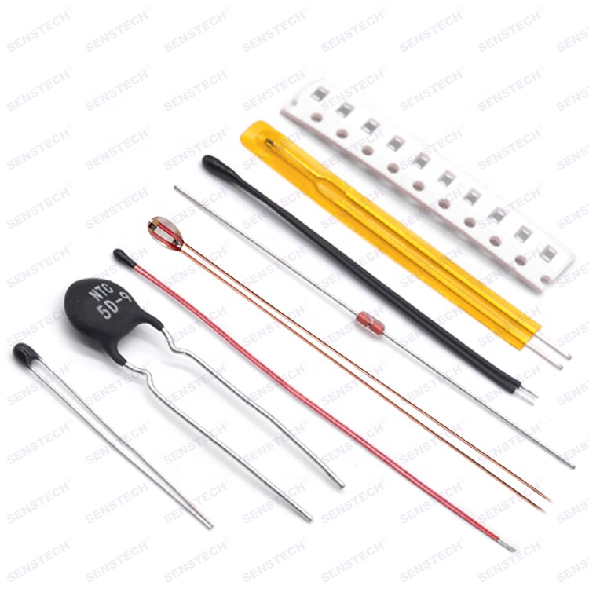
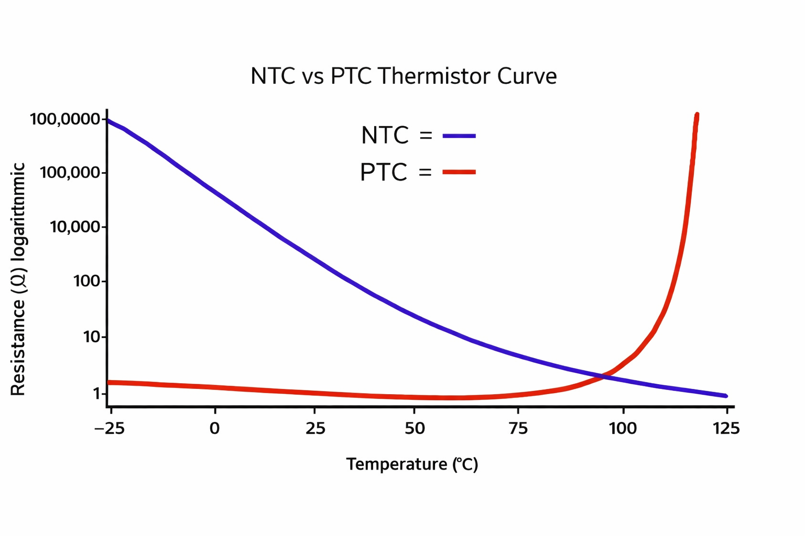
Thermistor
- Semiconductor resistor with strong temperature coefficient (often NTC).
- High sensitivity in a narrow range (e.g., −40 to 150 °C); great for precision around ambient.
- Requires linearization and self-heating must be minimized (use low excitation).
- Alternative for higher accuracy/stability: RTD, Resistance Temperature Detector, made from Platinum (Pt100/Pt1000) with 4-wire measurement.
Thermistor: Products
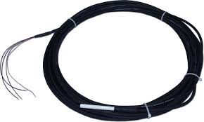
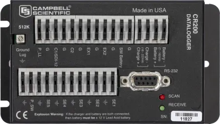
Thermocouple: Principle
Using Seebeck5 Effect
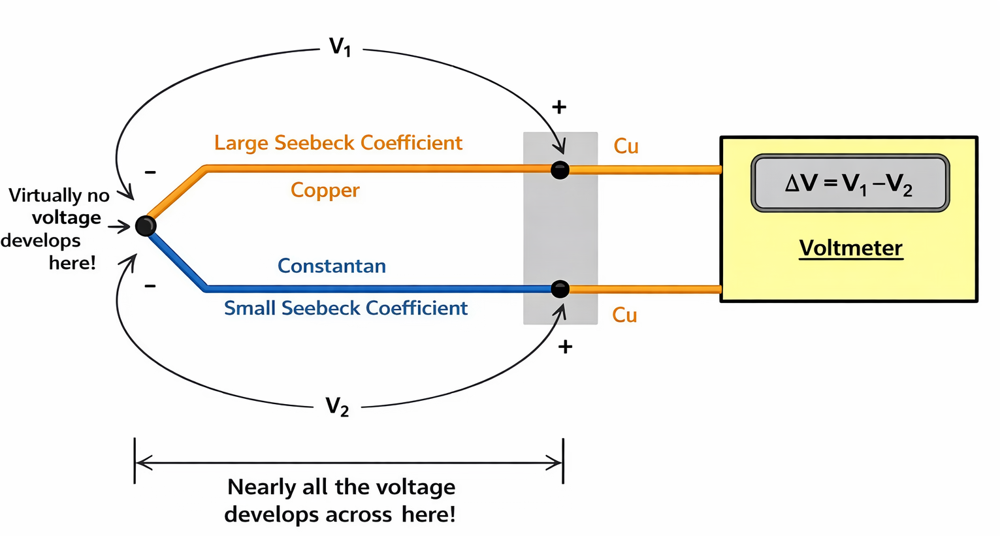
The Seebeck effect is the generation of a voltage when two dissimilar conductors form a circuit with a temperature difference between their junctions. Charge carriers diffuse from the hot side to the cold side, creating an electric potential that is proportional to the temperature gradient and the materials’ Seebeck coefficients. This is the physical basis of thermocouples, where the measured voltage is used to infer temperature without external power.
Thermocouple: Type
| Type | Typical range (°C) | Sensitivity (μV/°C) | Notes |
|---|---|---|---|
| K | −200 to 1260 | ~41 | Nickel–Chromel/Alumel; general purpose |
| J | −40 to 750 | ~55 | Iron/Constantan; not for high temp oxidation |
| T | −200 to 350 | ~43 | Copper/Constantan; good for cryogenic/low temp |
| E | −200 to 900 | ~68 | Chromel/Constantan; highest output of common types |
| N | −200 to 1260 | ~39 | Nicrosil/Nisil; better stability than K |
| R/S | 0 to 1600 | ~10 | Platinum/Rhodium; high-temp, costly |
| B | 600 to 1700 | ~6 | Platinum/Rhodium; best for very high temp |
- K-type is the most common for SHM.
Thermocouple: Products
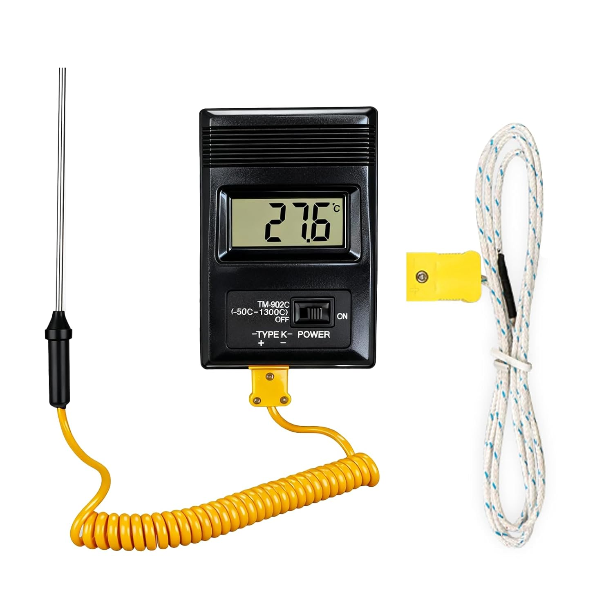
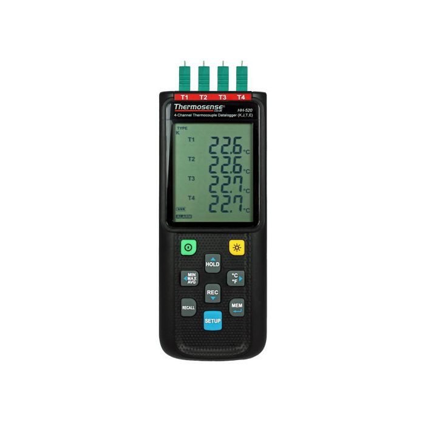
- Some products you can find in Amazon, or eBay.
Wind Sensor
- Mechanical Anemomter
- Ultrasonic Anemometer
Mechanical: Vane or Cup
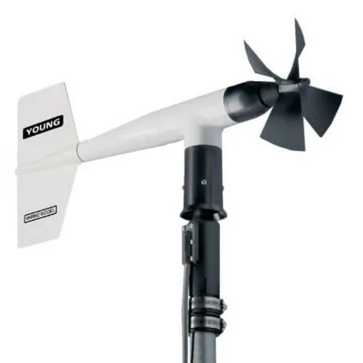
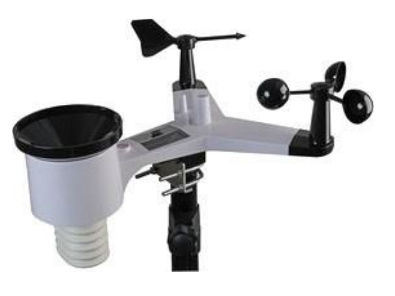
Ultrasonic
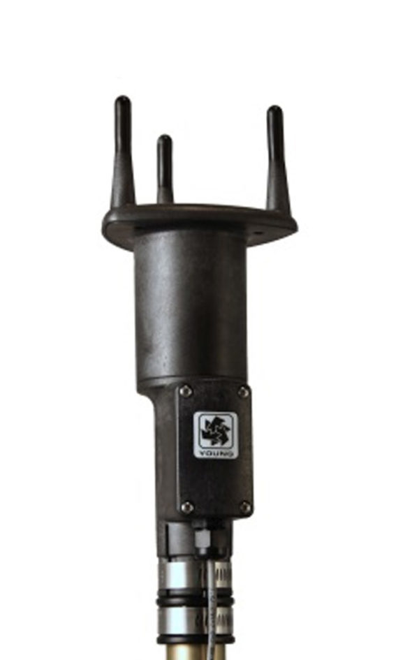
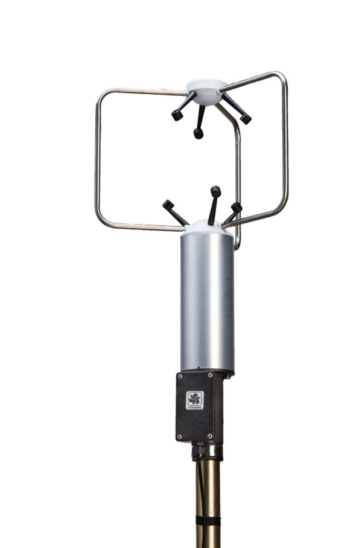
Two different experiences from Prof. James Brownjohn and myself
Prof. Brownjohn used an ultrasonic one in the past, and found the measurements were rubbish. Hence, he inclined to use mechanical ones.
A mechnical Anemometer was used in Humber Bridge, but on a heavy wind day, it was blown up.
My experiences on ultrasonic anemoeter seems to be OK so far, without any faulty measurements.
Anemometer Summary
| Aspect | Mechanical | Ultrasonic |
|---|---|---|
| Accuracy | Moderate (±1–3%) | High (±1% or better) |
| Resolution | Limited by inertia | Very high |
| Low-speed sensitivity | Poor | Excellent |
| Gust response | Slow | Very fast (up to 10 Hz) |
Summary
- Choosing the right sensor is critical for SHM.
- To choose well, you need a clear grasp of working principle and performance of each sensor.
- A choise is made to balance performance, cost, and quantity when deciding sensor type, manufacturer-model, quantities, and locations.
- There may be a chance to look at VES sensors in the future